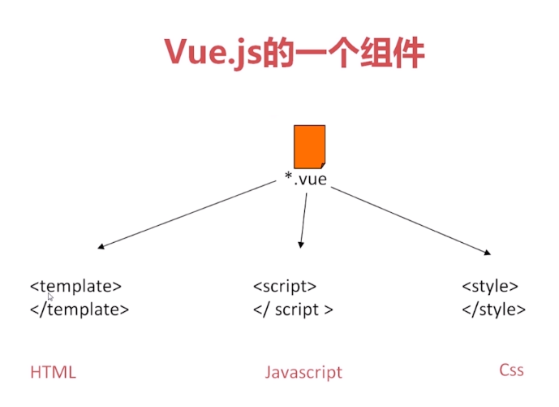
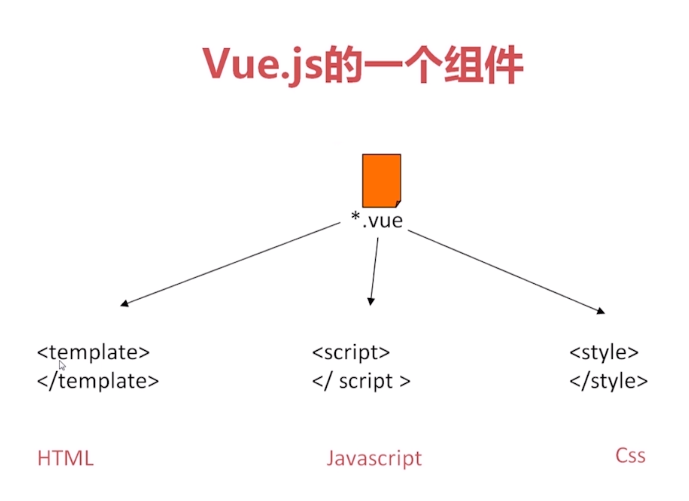

什么是Vue?
Vue是轻量级的MVVM框架,用于创建用户界面的渐进式框架.
同时吸收了React和Angular的优点,强调了React组件化的概念,可以轻松实现数据和展现的分离,吸收了Anguler的指令和页面操作的方法.
Vue.js 的核心是一个允许采用简洁的模板语法来声明式地将数据渲染进 DOM 的系统：
- template --> 模块,对应文档中HTML部分
- script --> 脚本,对应JS部分
- style --> 样式,对应文档中CSS部分
Vue是轻量级的MVVM框架,用于创建用户界面的渐进式框架.
同时吸收了React和Angular的优点,强调了React组件化的概念,可以轻松实现数据和展现的分离,吸收了Anguler的指令和页面操作的方法.
Vue.js 的核心是一个允许采用简洁的模板语法来声明式地将数据渲染进 DOM 的系统：
项目具体操作在src文件夹下
├── README.md // 项目说明文档
├── node_modules // 项目依赖包文件夹
├── build // 编译配置文件，一般不用管
│ ├── build.js
│ ├── check-versions.js
│ ├── dev-client.js
│ ├── dev-server.js
│ ├── utils.js
│ ├── vue-loader.conf.js
│ ├── webpack.base.conf.js
│ ├── webpack.dev.conf.js
│ └── webpack.prod.conf.js
├── config // 项目基本设置文件夹
│ ├── dev.env.js // 开发配置文件
│ ├── index.js // 配置主文件
│ └── prod.env.js // 编译配置文件
├── index.html // 项目入口文件
├── package-lock.json // npm5 新增文件，优化性能
├── package.json // 项目依赖包配置文件
├── src // 我们的项目的源码编写文件
│ ├── App.vue // APP入口文件
│ ├── assets // 初始项目资源目录，回头删掉
│ │ └── logo.png
│ ├── components // 组件目录
│ │ └── Hello.vue // 测试组件，回头删除
│ ├── main.js // 主配置文件
│ └── router // 路由配置文件夹
│ └── index.js // 路由配置文件
└── static // 资源放置目录
可以查看 VueAPI官方文档
-data /'deɪtə/
Vue实例的数据对象。（对象必须是纯粹的对象，含有零个或多个key/value对）。Vue 将会递归将 data 的属性转换为 getter/setter，从而让 data 的属性能够响应数据变化。
-methods /'mɛθəd/
Vue对象的方式方法。methods将被混入Vue实例中，可以通过VM实例访问这些方法，或者在指令表达式中使用。方法中的this自动绑定Vue实例。
-watch /wɑtʃ/
对象监听方法。一个对象，键是需要观察的表达式，值是对应的回调函数。值也可以是方法名或者包含选项的对象。(Vue提供了一个方法watch，它用于观察Vue实例上的数据变动。对应一个对象，键是观察表达式，值是对应回调。)
数据渲染：v-text、v-html、{{}}
控制模块显示隐藏：v-if、v-show
控制模块显示隐藏：v-if、v-show
渲染循环列表：v-for
事件绑定：v-on
属性绑定：v-bind